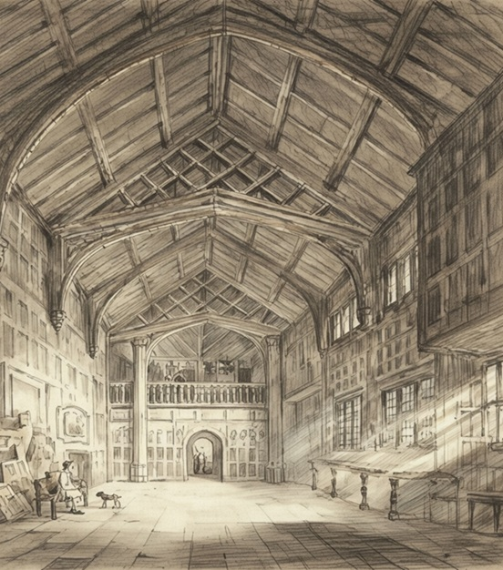
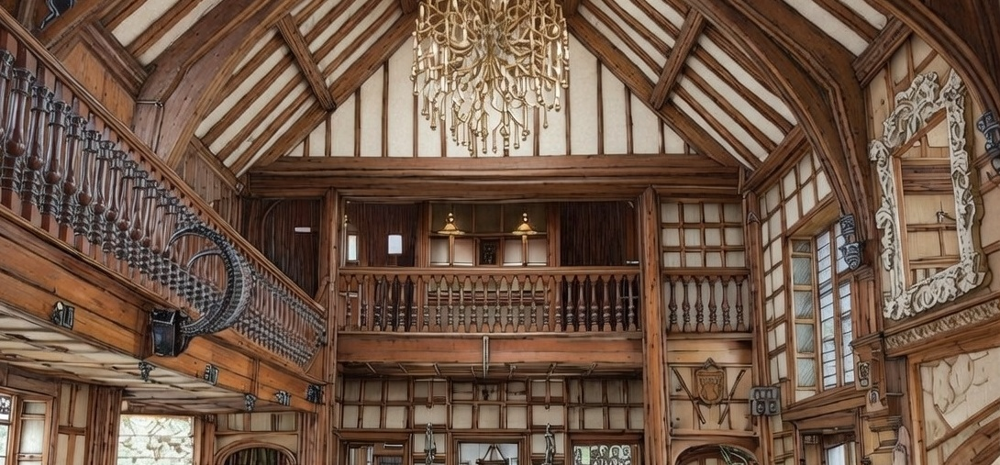
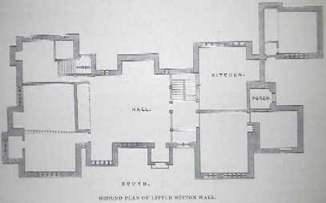
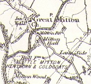

Little Mitton Hall
In 1664 it was sold to Alexander Holt of Gristlehurst, and when William Holt died in 1737 one of his daughters, Elizabeth, inherited the hall. It subsequently passed by marriage to Richard Beaumont of Whitley on 13 January 1747. This was an ancient manorial hall dating from the age of Henry VII and situated three miles south of Clitheroe. It is sometimes called Mytton Hall.
Whitaker stated in the History of Whalley that the hall was 30 feet long and 24 feet wide, with an open timbered roof 18 feet high to the wall plate. The hall had an embayed window, a screen, and a gallery above it, containing one of the finest Gothic rooms seen in a private house. The screen‑work was extremely rich and of later date than the rest of the woodwork. The panels of the screen are carved, in bold relief, with ten heads—male and female—within medallions, possibly intended as portraits. Others bear the initials T.D.H. The minstrel gallery appears to be an afterthought of the Jacobean era.
A large part of the house was rebuilt about 1844, with further alterations made in 1874.




Ground floor plan of Little Mitton Hall

Map of Mitton Hall, 1896
